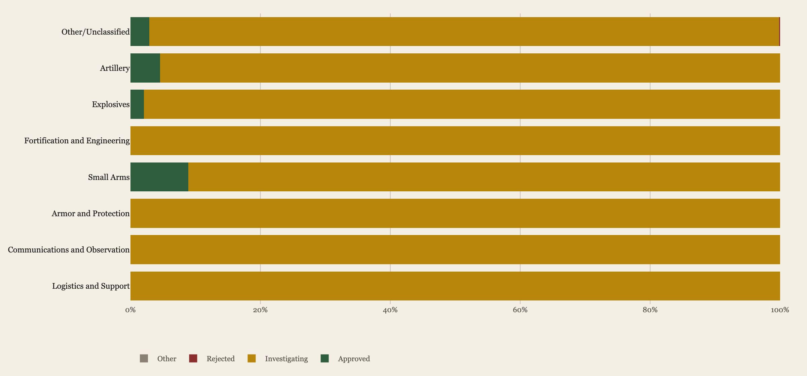

Of 1,901 Weapons, 56 Approved.
For eleven years the Board of Ordnance & Fortification read what the country mailed in. Most proposals never came back.
In November 1897, in a wood-paneled office of the State, War, and Navy Building, a five-officer panel began opening letters. Some came from the great federal arsenals at Watervliet and Springfield. Others came from inventors in basements across the country, with hand-drawn diagrams and large ambitions: a flying torpedo, an armored automobile, a cannon that aimed itself.
The panel was the U.S. Board of Ordnance & Fortification, established by Congress to evaluate proposed weapons and field experiments. Over the next eleven years it logged 1,901 submissions across nine annual reports. It approved fifty-six.
What follows is the archive of that decision-making, reconstructed from the original reports and read against the military budget that funded it. The pattern is harder than it looks. The Board was not a generator of innovation. It was a filter, and a slow one.
The Flood
By volume, the Board's caseload was uneven. The first report year, 1897–98, drew nearly 400 proposals, mostly explosives and artillery experiments tied to the Spanish-American War buildup. After 1901, submissions thinned, then revived during the international arms race that preceded the First World War.
Most of what came in did not arrive in any clean technological category. The largest single bucket — sixty percent of the entire archive — is what we have classified, faithfully, as Other / Unclassified: experimental rifles, signal devices, novel projectiles, claims of perpetual motion, things the Board itself had no taxonomy for.

The single most consequential discovery is buried in that Sankey: the Board rarely said no. It said investigating. Of 1,901 proposals, 1,843 — ninety-seven percent — were placed in that holding pattern. Approval was rare. Outright rejection was rarer still.
The Filter
If the Board had a thesis about which technologies deserved attention, it lived in the approval distribution. Across eight technology clusters, only four ever produced an approval: Artillery, Explosives, Small Arms, and the residual Other category. Four other clusters — Armor, Communications, Logistics, Fortification & Engineering — went the entire decade without a single greenlight.

This is not because those areas were technologically unimportant. Communications, in particular, was the front edge of military innovation in this period — wireless telegraphy, signaling, observation balloons — yet none of the twenty-six communications proposals submitted to the Board were approved through it. The Board's authority and the Army's procurement actually flowed in different channels.
The Money
While the Board read its mail, the federal military budget tripled. From a Civil-War-era trough of roughly two billion dollars (in 2025 terms) in the 1890s, U.S. defense spending climbed to seven billion by 1902 and eventually to ten billion before the WWI mobilization vertical-launched the entire chart.

Plot the proposal count against that budget and a tension surfaces. Dollars rose. Submissions did not, in any sustained way. The relationship between funding and inventor activity was looser than the rhetoric of the period suggested.

Government & Private
One reading of this archive treats it as a public-private dialogue. Roughly half of all submissions came from federal employees: Ordnance Department officers, Army arsenal staff, Navy gunnery commanders. The other half came from private inventors — gun cranks, engineers, and the occasional unaffiliated pamphleteer.
For most of the period the two streams ran at different scales. Government submissions were fewer, but better received: the 1901 peak shows a 9.7% private approval rate against a 4.2% government rate, but in absolute terms the Board approved more government work than private work in every year except one.

A Look Inside
Beneath the aggregate numbers is the individual record. Every proposal in the archive — by name, by year, by outcome — is browsable. The full review timeline below contains 190 distinct technologies considered across the nine reporting periods. Search it; filter by category or outcome; hover for the original Board language.

What Survived
The Board of Ordnance & Fortification was dissolved in 1909 and folded into the Army's regular ordnance procurement structure. The fifty-six proposals it approved did not, on the whole, change American firepower. The proposals it set into "investigating" — most of which never received a formal disposition — outweighed everything else combined.
What this archive offers is a record of what an institution chose not to decide. Read the Sankey, and the absence of red is striking. The Board did not say no. It deferred. Rarely a building in Washington has been so consistent.
Sources & Method
Records reconstructed from the BOF Annual Reports, 1897–1908 (nine volumes). Budget data from Congressional appropriations acts, 1865–1920, with 2025-dollar adjustment via CPI. Pipeline: Python (pandas + plotly). Source code and raw data: github.com/Smokeybear10/project.BOFARCHIVES.